Projects

Fatigue & Fracture Analysis Toolkit
Developed a Python-based structural integrity toolkit for fatigue life prediction, crack growth simulation, and probabilistic reliability analysis. Implemented Paris, Walker, and Forman models with stress intensity factor evaluation and Monte Carlo simulation.
View Engineering Results

Crack growth evolution.

da/dN vs ΔK curve.

S-N fatigue curve.

Strain-life model.

Stress intensity factor.

Monte Carlo reliability.

Mean stress correction.

Material comparison.

Composite Laminate Analysis Toolkit
Developed a Classical Lamination Theory (CLT) based composite analysis tool for predicting laminate response, ply-level stresses, and failure using Tsai-Hill and Tsai-Wu criteria, with progressive failure simulation and optimization capabilities.
View Engineering Results

Laminate optimization.

Ply stacking sequence.

Stress distribution.

Progressive failure.

ABD matrices.
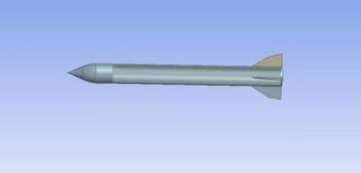
Hypersonic Flow Modeling & Turbine Blade Analysis
Performed high-fidelity CFD simulation of a missile in hypersonic flow (Mach 10) using ANSYS Fluent, solving Navier-Stokes equations with k-ω turbulence model. Evaluated aerodynamic performance through lift/drag analysis, pressure distribution, velocity-Mach contours, and shock wave formation. Additionally conducted structural and modal analysis of a high-pressure turbine (HPT) blade under rotational and aerodynamic loading.
View Engineering Results
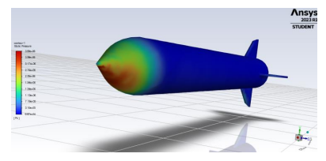
Pressure contour at Mach 10.
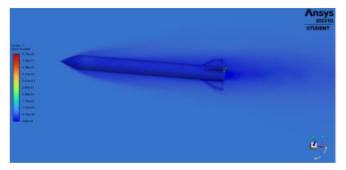
Velocity-Mach distribution.
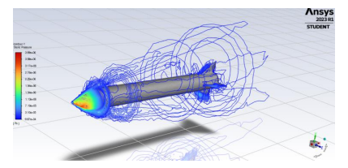
Shock cone formation.
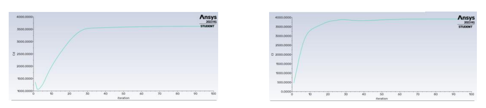
Lift and drag coefficients.
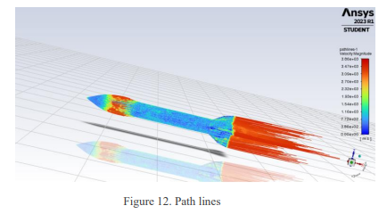
Path Lines.
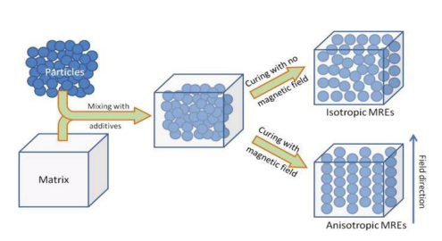
MR Elastomer Aging & Vibration Analysis
Investigated the influence of environmental aging on the damping properties of silicone-based magnetorheological elastomers (MREs). Conducted free vibration experiments and analyzed system response to extract damping ratio and natural frequency. Studied the effect of humidity exposure on viscoelastic behavior, demonstrating increased damping and reduced stiffness over time.
View Experimental Results
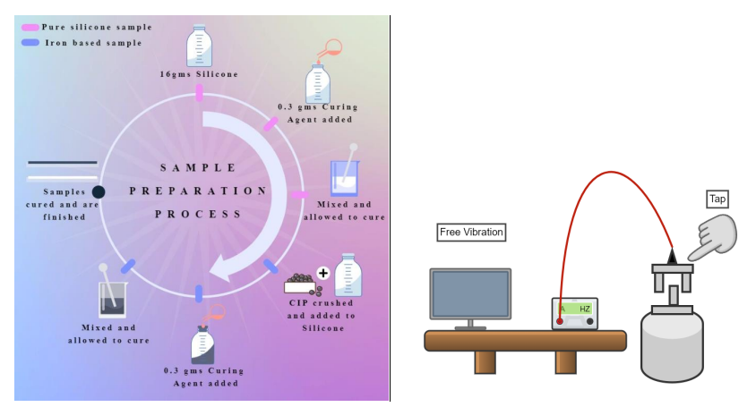
Experimental setup with accelerometer.
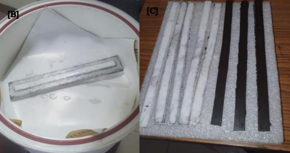
Sample preparation (silicone + CIP).
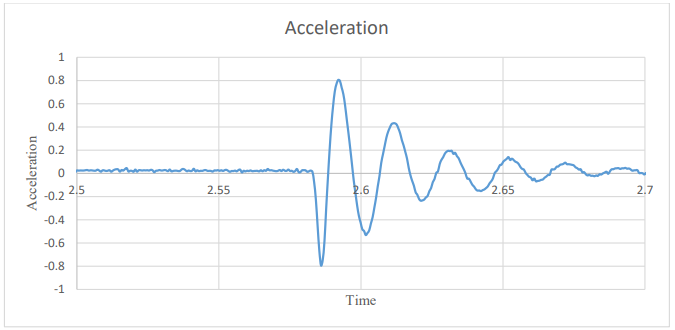
Damping ratio variation.
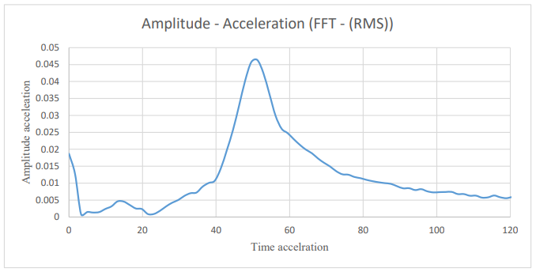
Natural frequency response.
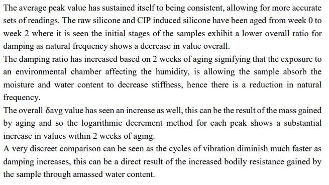
Week 0 vs Week 2 comparison.